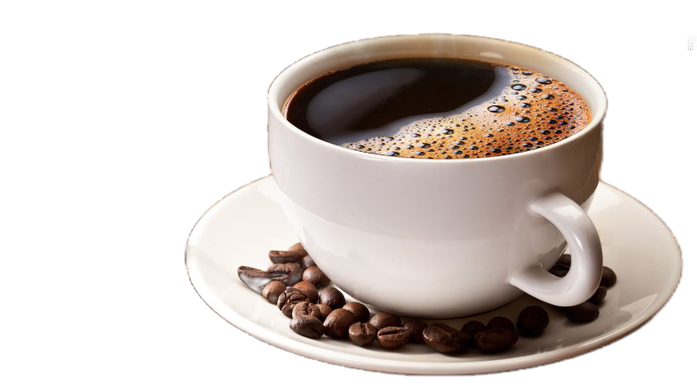

Welcome to Balog Coffee Shop
"Click, Shop, Delight - Your Online Wonders Await!"

ABOUT US
Welcome to Balog Coffee Shop, where we brew perfection in every cup. Indulge in the rich aroma and exquisite flavors that define our craft. Immerse yourself in our cozy ambiance, where comfort and relaxation await. Our passionate baristas are dedicated to delivering the finest coffee experience, tailored to your preferences. Step into Balog Coffee Shop and let us awaken your senses with our exceptional brews and warm hospitality.
PRODUCTS

Coffee Americano
₱ 150.00
Our Americano coffee at Balog Coffee Shop is a true masterpiece. Carefully crafted with precision and expertise, it offers a bold and robust flavor that will awaken your taste buds. Made with the finest coffee beans and expertly extracted, our Americano is the perfect balance of strength and smoothness. Sip on this classic beverage and experience the rich aroma and satisfying depth that will keep you coming back for more. At Balog Coffee Shop, we take pride in serving an Americano that embodies excellence in every sip.

Ice Coffee
₱ 85.00
Our iced coffee at Balog Coffee Shop is a refreshing delight. Made with care and precision, it offers a smooth and invigorating taste that will cool you down on a hot day. Sip on this chilled beverage and experience the perfect balance of bold flavors and a hint of sweetness. At Balog Coffee Shop, we take pride in serving an iced coffee that is simply irresistible.

Puto Cheese
₱ 70.00 (3pcs)
Our cheese puto at Balog Coffee Shop is a delectable treat that will satisfy your cravings. Made with love and the finest ingredients, our cheese puto offers a delightful combination of fluffy texture and savory cheese goodness. Each bite is a burst of flavor that will leave you wanting more. Indulge in this Filipino favorite at Balog Coffee Shop and experience pure cheesy bliss.
PROMOS
CONTACT US
+63 986 482 5152
Mon to Fri 7AM to 8PM
@Balog_coffeeShop.com.ph